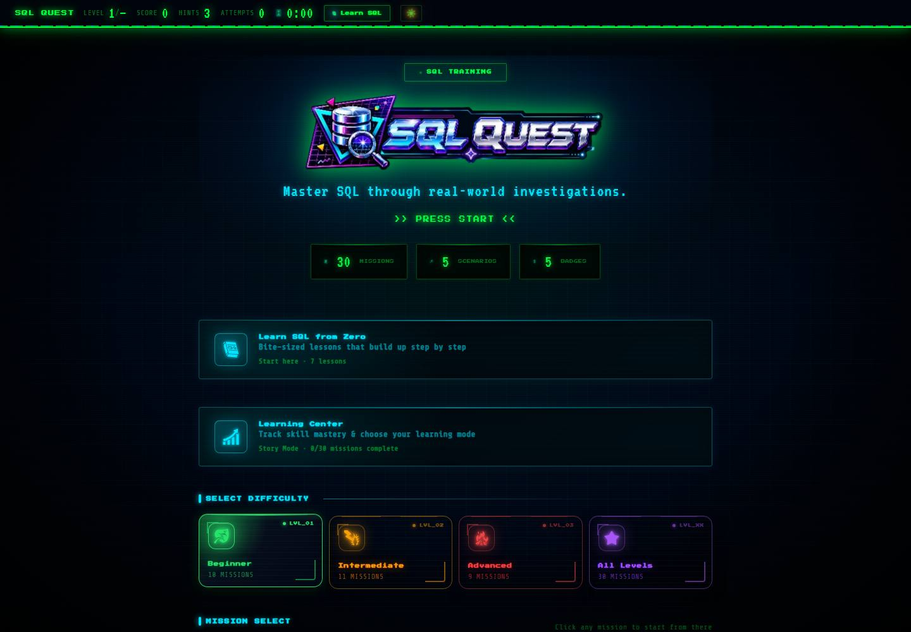

SQL Quest
Práctica de SQL en el contexto de una investigación financiera.

Investiga una pregunta. Explica el resultado.
Sigue un ejemplo simplificado de operaciones financieras con registros totalmente ficticios.
¿Qué clientes ficticios requieren una revisión KYC?
En un ejercicio, el analista identifica registros con documentación pendiente antes de decidir qué casos necesitan revisión adicional.
Convierte la pregunta en un filtro
SELECT client_id, kyc_status
FROM clients
WHERE kyc_status = 'Pending';SQL ilustrativo para aprender. Los nombres de las tablas pueden diferir en el juego.
Interpreta los registros ficticios, no solo las filas
| ID de cliente | Estado KYC |
|---|---|
| C-101 | Pendiente |
| C-104 | Pendiente |
Dos registros coincidentes se marcarían para revisión humana. Un resultado SQL no constituye por sí solo una decisión de cumplimiento.
Ejemplo educativo ficticio. No son registros reales de clientes ni de cumplimiento.
La pregunta de aprendizaje
Los ejercicios de SQL pueden enseñar sintaxis sin explicar para qué sirve una consulta. Las operaciones financieras plantean preguntas concretas: ¿qué clientes requieren una revisión KYC, qué transacciones merecen investigación y qué registros no concilian?
Este proyecto plantea: ¿Pueden esos escenarios hacer más útil y accesible la práctica de consultas?
Alcance y enfoque
SQL Quest es un proyecto educativo independiente que funciona en el navegador. Combina registros financieros ficticios, misiones de investigación, lecciones y un laboratorio libre de SQL.
- Dar un propósito a cada consulta: las misiones plantean tareas sobre documentación de clientes, monitoreo de transacciones, conciliación o preparación para auditorías.
- Permitir la experimentación: un motor SQLite en el navegador ejecuta consultas y devuelve resultados o errores.
- Facilitar la práctica: las lecciones, pistas y seguimiento de habilidades acompañan un entorno de pruebas con un esquema visible.
- Simplificar el acceso: la aplicación no requiere que el usuario administre un servidor de bases de datos; un service worker permite usarla sin conexión.
Tres decisiones de diseño
Usar datos financieros ficticios.
Los clientes, cuentas y transacciones ficticios aportan contexto sin exponer información real. Los escenarios son material educativo, no casos auténticos de cumplimiento.
Ejecutar SQL en el navegador.
sql.js permite ejecutar SQLite mediante WebAssembly para consultar el esquema y lanzar consultas en la misma experiencia, sin una configuración compleja.
Ofrecer misiones y práctica libre.
Las investigaciones estructuradas ofrecen objetivos claros; el laboratorio permite probar alternativas, revisar errores y explorar más allá de una única respuesta.
Qué puedes probar
El entregable es una experiencia interactiva para aprender SQL mediante escenarios financieros, lecciones, pistas y un laboratorio de práctica.
Sigue este recorrido: abre una misión inicial, inspecciona el esquema, ejecuta una consulta y compara los resultados con la pregunta investigada. Después prueba otra consulta en el laboratorio.
Limitaciones y próxima validación
Es una herramienta educativa con registros ficticios. No valida decisiones reales de cumplimiento ni afirma mejoras medidas en los resultados de aprendizaje.
Una próxima validación podría observar a nuevos estudiantes mientras completan una misión para identificar dudas sobre el esquema, la tarea o los mensajes de error. El código está disponible conforme a la licencia del repositorio.